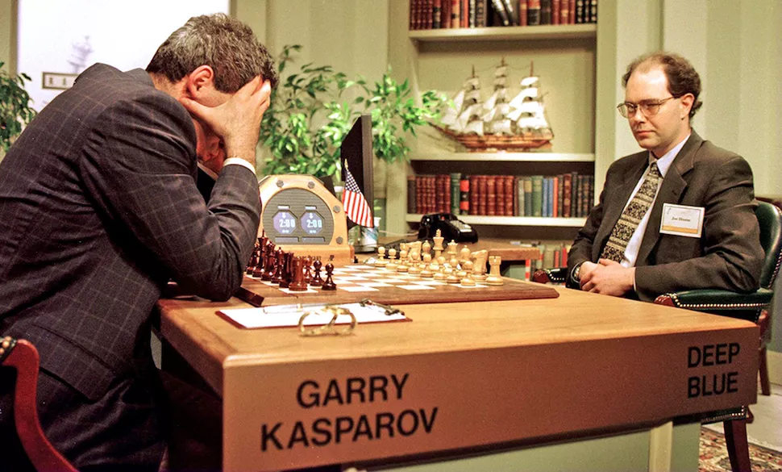
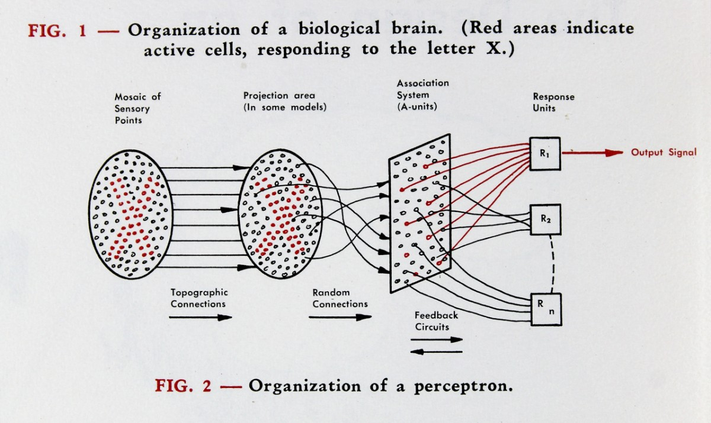
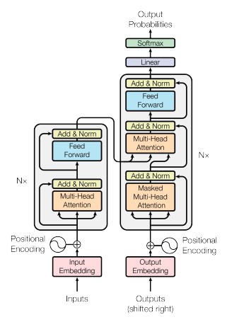
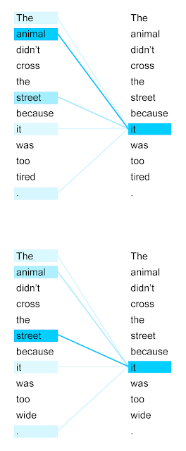
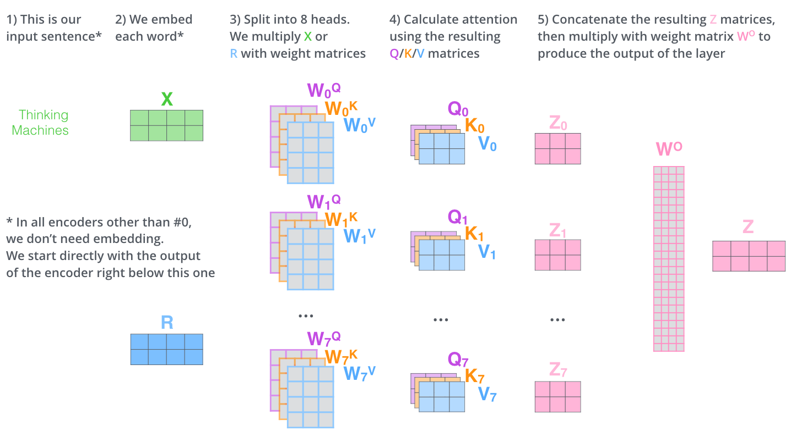
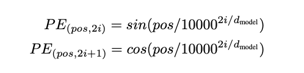

The Game of AI: And How the Transformer Transformed It
For decades, the world has been fascinated with the concept of artificial intelligence; we have written stories about it, produced movies, written countless computer programs, and theorized about what is possible to achieve and what isn’t. This history is an impressive one, but also somewhat humorous to me; it all seems like a bit of a game, with teams of scientists and researchers competing to create a machine that can play chess the best, or draw the best pictures, or write more human-like stories.

The Turing Test: How it Started
In 1950, Alan Turing published a paper titled Computing Machinery and Intelligence, which sought to discuss the all-important question, “can machines think?” Turing hoped to find an answer to the question of whether computers can demonstrate true intelligence. However, this question rather vague and hard to measure (“too meaningless to deserve discussion,” in Turing’s words). Instead, Turing proposes an alternate challenge: to create a machine that can perform at human levels or better in the “Imitation Game,” a Q&A game where a computer is slated against a human interrogator who is tasked with distinguishing the computer from a human counterpart. Turing claims that “in about fifty years' time it will be possible to programme computers … to make them play the imitation game so well that an average interrogator will not have more than 70 per cent, chance of making the right identification.” Interestingly, Turing offers no suggestions for an implementation of such a machine in this paper. He simply discusses whether it’s possible, whether the question he poses is relevant, and what objections there might be to this discussion. The “Turing test” introduced in this paper would come to serve as a benchmark for future programs and their thinking power, or lack thereof.
Turing also notably made the distinction that only digital computers would be “allowed to take part” in the game, which at the time was non-obvious, and forecasts that machines might one day be able to compete with humans in activities like playing chess, which was realized in 1997 when the IBM computer Deep Blue famously beat reigning chess world champion Garry Kasparov. Another amusing note made in Turing’s paper was that this game might be “unfair” for the machine if humans were discovered to have telepathic abilities, which was apparently another open question at the time.
Notable Following Accomplishments in AI
Turing’s paper may have officially proposed the challenge to create artificial intelligence, but he never uses the term itself. This term was coined 6 years later, by John McCarthy, at the Dartmouth Summer Research Project on Artificial Intelligence, a two-month long conference that brought together some of the brightest minds in the field to study the topic. At this conference, Herbert Simon and Alan Newell presented their breakthrough program, the Logic Theorist, which was capable of proving mathematical theorems and represented the first prototype of a “thinking machine”. This program was inspired by the work of Alan Turing, Claude Shannon and Kurt Gödel, and modeled the thinking process by breaking mathematical expressions down into elements and sub-elements, transforming these symbols into proofs by building them back up in a hierarchical fashion.
Two years later, the Perceptron was introduced, a program written by Frank Rosenblatt which was capable of distinguishing punch cards with different characteristics from one another. Rosenblatt toted his accomplishment as “the first machine which is capable of having an original idea”. This is an overstatement, but the accomplishment was impressive nonetheless. The program was implemented on the massive IBM 704, and, most importantly, was the first instance of a neural network being trained for the purpose of computation. The concept of a neural network had already been introduced conceptually in 1943, but Rosenblatt’s implementation was the first actual neural network that was trained, and laid the foundation for decades of neural networks research in decades to come.

Of course, between the Perceptron and the transformer there were decades of innovation in deep learning, but I wanted to mention these initial innovations as they seem to have paved the way for the “game” of AI, where researchers develop ever-more complex and intelligent models, striving to create a machine that can truly think. Since the introduction of the Perceptron, neural networks have been modified and designed for use in computing a wide variety of tasks and applications, with different architectures proving better suited to certain applications. I’ve written another post which provides an overview of how these networks work and some applications following the guidance of Andrej Karpathy’s course on neural networks; this is a good resource for background information. For this post, I will focus on one particular kind of neural network: the transformer. The transformer architecture has revolutionized the field of deep learning, proved useful in almost every application for neural networks since its introduction in 2017, and given rise to a slew of models capable of passing the Turing test.
Transformers: The Structure and Implementation
The transformer architecture was initially introduced for use in the field of machine translation , with the aim of providing more detailed context when translating long input sequences. Recurrent and convolutional neural networks, the two models prevalent at the time, suffered from an inability to retain long-term information, as they only could factor in information from the last state of the encoder. This means that as the distance between words in an input increased, the computational cost also increases, making it prohibitively expensive to accurately factor in distant words. The transformer address this limitation by “eschewing recurrence and instead relying entirely on the attention mechanism” (Attention Paper).
The transformer architecture basically allows the neural network to gain increased awareness of other tokens in both the input and output using attention, a technique of assigning importance to other tokens so that more important elements can be given more weight in deciding the next output token. Attention can be thought of as a series of matrix transformations, designed so that the resulting values have been aligned to prioritize tokens that provide more context in the input sequence.

This diagram from the Transformer paper introduces the basic structure of the architecture. On the left hand side, we see an encoder block (colored in grey), and on the right we have the decoder block. The paper suggests the use of 6 encoder and 6 decoder blocks, although these numbers are hyperparameters and can be tweaked according to the use case. Each encoder block consists of two main components; a multi-head attention layer, which I will elaborate on, and a fully connected feed-forward neural network, which is essentially a standard multi-layer perceptron. To allow for information from the input to each layer to carry over more freely, there are also residual connections, which skip the corresponding layer and are added to its output in a layer normalization.
In the decoder block, we have essentially the same setup, except that an additional masked multi-head attention layer is added, which allows the model to pay attention to only previous tokens while generating further output.
Multi-Headed Self-Attention
The self-attention mechanism basically calculates how important each word should be in the decision-making process of choosing the next one.

This mechanism is implemented by a series of vector operations on the vector embeddings for each token. For each of the decoder or encoder’s input vectors (each of which represents a token), we create three additional vectors; a query, key and value vector, by multiplying each embedding vector from the input by three weight matrices that were trained during the training process. So we take input vector x1, multiply it by Wq, Wk and Wv (the weight matrices for queries, keys and values) to get q1, k1, and v1 (the query, key and value vector). To calculate the attention score of x1 with respect to all other inputs x2...xn we multiply the query vector q1 by the key vectors of the other inputs k1...kn. This score is scaled down proportionally to the dimension of the key vectors to reduce volatility, passed through the softmax function to normalize, and multiplied by the value vectors. If the softmax value resulting from the attention score is very low, the corresponding value vector will have small values, signaling that the corresponding token should not be given much weight. If the attention score was relatively large, then that value vector will be given more weight. The value vectors are then summed to produce the final output of self-attention for this one input. In the above example, we see that “the”, “animal”, “street” and “it” are given more attention than the other words in the sequence.
This was the attention mechanism for a single input token. In practice, this process is executed on an entire input sequence in parallel by constructing matrices from the input vectors and performing matrix operations to calculate the attention score. There are also multiple “heads” in multi-head attention, where each head is initialized with differing weight matrices, and thus “pays attention” to different characteristics in the input sequence. The diagram below from Jay Alammar’s The Illustrated Transformer (a great resource if you’d like more details on the attention process) models this operation with 8 attention heads, where the output matrix is Z.

Positional Encoding
We also need some way to encode the relative position of inputs in the input sequence; currently, the input “the black horse drank water from the well” would be assigned the same attention scores as “water well from horse the black” or another permutation of the same sequence. From the Transformer paper: “the network and the self-attention mechanism is permutation invariant.” Thus, we add another feature to the initial embedding; a positional encoding.

The positional encoding is another vector which is added to the input embedding, and serves to add additional context to the output from the attention layer.
Final Output
After passing through each attention layer and feed-forward neural net in each encoder and decoder, the output from the final decoder block is passed to a linear layer, which transforms the decoder’s output to a vector of logits of dimension equivalent to the model’s vocabulary size. These logits can then be converted to log probabilities, and the final output is chosen based on the element with the highest probability. This process is repeated until the output has been fully generated.
Impact and Applications
The transformer architecture is relatively simple, yet its impacts have been broad. The underlying improvement is the attention mechanism; previously, language models would have trouble distinguishing important keywords in a long input sequence, which provides a significant roadblock to quality output. With the transformer, we see the development of chatbots that pass the Turing Test, solving the decades-old challenge, as well as neural networks that can generate and understand images, solve complex scientific problems like protein structure prediction, and use computer vision to make progress toward fully self-driving cars. The transformer is unique in its versatility; before it was released, many of the models that are now trained using the transformer architecture used widely divergent architectures.
Besides the attention mechanism, the transformer’s most important characteristic is its computational efficiency, due to the parallel nature of the matrix operations inherent to its architecture. This has allowed transformer-based models to increase exponentially in size; in 2018, the first GPT released by OpenAI had 0.12 billion parameters — now, GPT-4 is estimated to have trillions of parameters. This is advantageous as it enable bigger and more powerful models, but also has lead to a new consideration: the environmental impact of training and using neural networks.
GPT-3, with a model size of 175 billion parameters, has been estimated to require 355 years of training time and $4.6 million in compute cost if it were trained on a single GPU. The associated carbon footprint is “equivalent to driving 112 gasoline powered cars for a year,” according to this blog post from the Columbia Climate School. This is a staggering amount of computation; computation that is often powered by fossil fuels and also requires huge amounts of fresh water for cooling. Other papers have discussed the dangers of training models on unfiltered and unregulated data, arguing that the size of the dataset doesn’t necessarily guarantee its diversity. So, while the transformer has revolutionized how neural networks are trained and helped to blow winds into the sails of deep learning research and public interest in artificial intelligence, it is not a perfect model, and should be modified so that environmental costs and the model’s biases are considered.